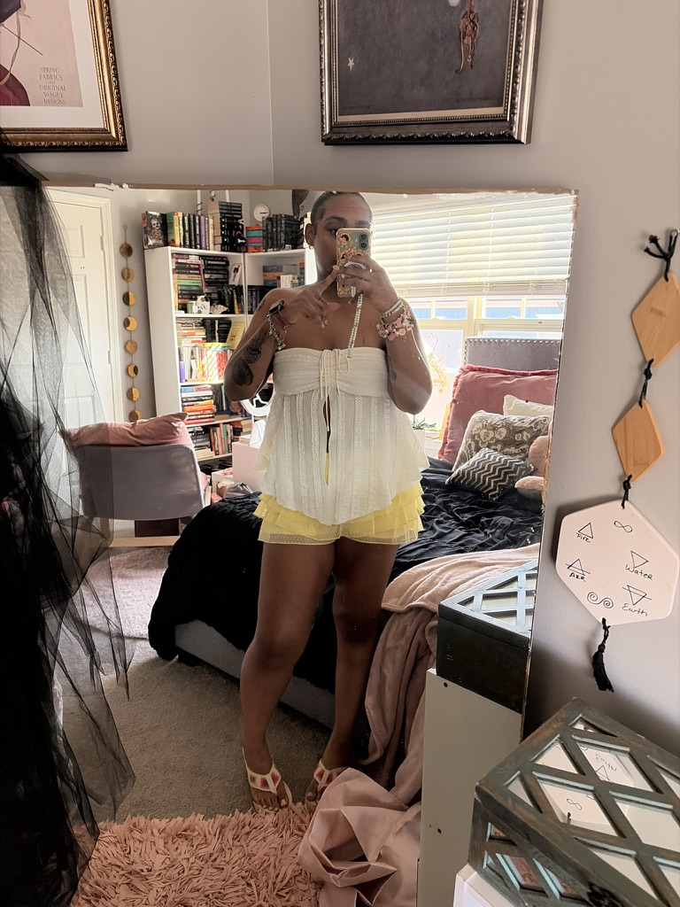

Welcome to my COP4813 Site!

The primary purpose of this site is to demonstrate my web programming capabilities for the COP4813 class. It serves as an ongoing digital portfolio where I will showcase my coursework, projects, and understanding of HTML and CSS.
Professional Overview
I am an Information Technology student working towards my Bachelor of Science degree.
Technical Skills
- Relational Database Design & Entity-Relationship Modeling
- SQL Query Writing (MySQL Workbench, SQLite)
- Hardware troubleshooting & virtual machine configuration
- HTML5 & CSS3